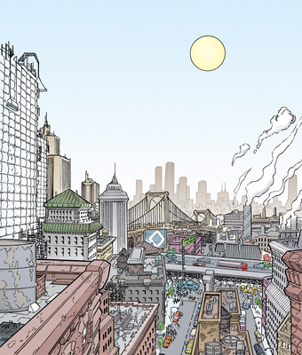
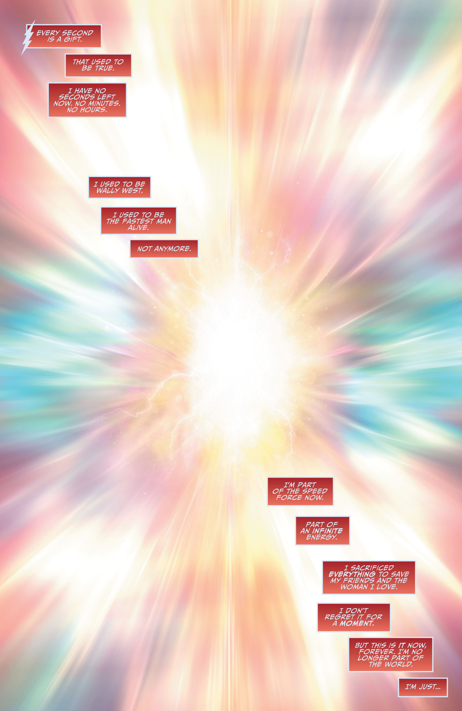

Central City
Central City, located across the Missouri River from Keystone City, Kansas, was founded in the 19th century and became an important stop for cattle drives. It began to see tremendous growth after the completion of the Transcontinental Railroad, becoming
the first major hub west of Chicago. A second period of growth occurred after World War I, and it has burgeoned to the present day.
Located across the Mississippi River from Central City, Missouri, Keystone City, Kansas first became home to settlers in 1806, shortly after the Louisiana Purchase. It began to grow rapidly after the Civil War, attracting farmers and becoming a common
starting point for those who were moving to the West. After the completion of the Transcontinental Railroad, it became an important depot, attracting the livestock and meat-packing industries. Although the stockyards closed in
the 1950s, the area has been revitalized and the old warehouses transformed into a fashionable retail destination. Keystone remains a center of industry, home to aircraft and automobile manufacturers, including Keystone Motors.
Keystone was the home of Jay Garrick, the original Flash. The Thinker, the Fiddler, and the Shade put it in suspended animation for years until it was discovered by Central City resident and second Flash, Barry Allen. The third
Flash, Wally West moved to Keystone upon the recommendation of Jay Garrick's wife Joan.

Keystone City

The Speed Force
The Speed Force is a cosmic force based around velocity and movement and one of The Seven Forces of the Universe. It is the representation of reality in motion, being the very cosmic force that pushes space and time forward.
 Home
Characters
locations
Media
Photo Gallery
Home
Characters
locations
Media
Photo Gallery